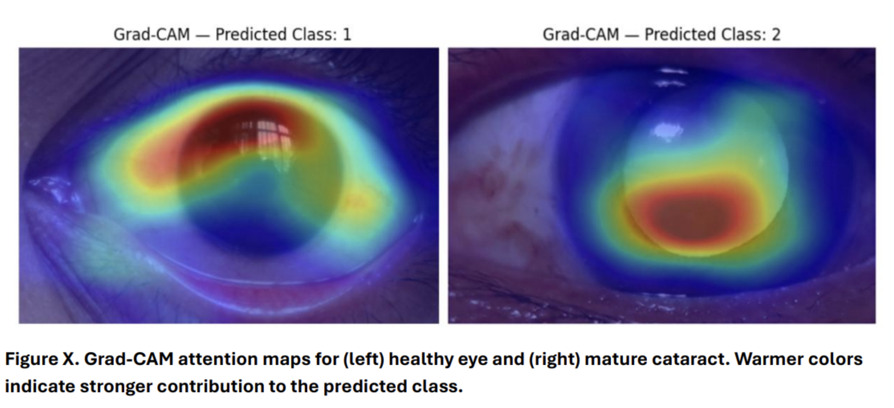

A calibrated ensemble framework for reliable screening under real-world imaging conditions, built on the CMPD Roshni dataset.
Cataract remains one of the leading causes of preventable blindness worldwide. Accurate grading typically requires slit lamp examination in tertiary care centers. In rural and resource limited settings, such infrastructure is scarce, and screening often depends on variable imaging conditions, limited equipment, and non specialist operators.
The objective of this project is to develop a deep learning system capable of distinguishing:
The system is not designed to optimize performance only on curated clinical datasets. It is intentionally built to behave reliably under imperfect conditions such as outreach camps, secondary hospitals, and mobile screening environments where lighting, framing, and camera quality are inconsistent.
Structural and Data Constraints — Designing such a system introduces several non trivial challenges.
Clinical slit lamp imagery differs significantly from mobile periocular captures. Variability arises from illumination intensity and direction, sensor characteristics, background artifacts, motion blur, framing inconsistencies, and periocular context differences.
The dataset was drawn from three independent sources providing different forms of supervision. Only 494 images contained full severity labels, and advanced cases were limited.
Many eyes were captured multiple times. Strict subject level splitting was enforced prior to training to ensure evaluation reflected true generalization rather than identity leakage.
In screening contexts, overconfident errors are unsafe. Post hoc probability calibration was applied to ensure confidence scores better reflect true uncertainty.
Design Response — The modeling approach was constructed directly around these constraints.
An EfficientNet B0 backbone with two parallel outputs. Mask based routing preserved task integrity while allowing shared feature learning.
Removal of near duplicates; strict subject level splitting; label verification; controlled batch composition; and class imbalance handling through weighted losses.
Fine tuning depth was constrained. Early backbone layers were frozen, and only higher semantic blocks were selectively unfrozen.
Two stage schedule: conservative photometric adjustments followed by controlled robustness perturbations applied during training only.
Each model underwent temperature scaling. Final outputs obtained through simple averaging of calibrated probabilities from three resolution-diverse models.
Immature and Mature were collapsed at deployment into a unified Cataract Present class, aligning operational claims with empirical evidence.
Summary: The final system is a calibrated, ensemble based cataract screening model designed for robustness under domain variability and heterogeneous supervision. Its purpose is high sensitivity detection of cataract presence and reliable identification of intraocular lens status under realistic acquisition conditions.
The study integrates three ophthalmic datasets serving distinct methodological roles — separating high-fidelity clinical supervision from deployment-oriented robustness modeling.
Clinically staged slit-lamp anterior segment images labeled by cataract severity and organized by subject and eye, enabling strict subject-level isolation.
Additional severity-labeled images used only to increase visual diversity during training. Absence of subject identifiers precluded validation use.
Mobile periocular images (natural lens vs. IOL) from 188 subjects. Captured on Samsung Galaxy A12. Reflects realistic smartphone variability.
Within each (subject, eye) group, near-duplicates (Hamming distance ≤ 6) were reduced to at most two per eye. From 1,304 raw images, 439 retained, 391 remaining after label merging.
Global pHash reduced 410 images to 103 unique groups, confirming augmentation artifacts. Excluded from validation and testing entirely.
Repeated captures reflect genuine session variability and were preserved. Subject-level grouping was enforced with 70/30 subject-level splitting.
Three classes: no_cataract, immature, mature — totaling 494 supervised images (312 immature, 106 mature, 76 no cataract). Mask-based routing ensured strict task separation.
Binary lens-status classification: natural vs. IOL. Deployment collapses immature and mature into "cataract_present," reflecting limited mature representation and observed boundary instability.
After filtering, the unified dataset contained 2,876 images: 2,382 CMPD, 391 Mendeley, and 103 Kaggle. Only 494 images contributed to severity supervision.
Images were conservatively center-cropped (~60% region with padding; minimum 150×150 pixels). Augmentation followed a phased strategy: mild baseline transformations for domain adaptation, followed by robustness augmentations applied during training only. Validation data remained clean.
Key limitations include: limited and imbalanced severity supervision, absence of subject identifiers in Kaggle, domain shift between slit-lamp and mobile imagery, and lack of an external clinical test set.
The system was developed through a staged pipeline to ensure reproducibility and prevent analytical leakage: Train → Calibrate → Ensemble → Evaluate. Hover any node in the flowchart below to learn the details of each stage.
Model training and architectural experiments were conducted in 04_train_baseline.ipynb, calibration in 05_temperature_scaling.ipynb, and ensemble construction in 06_ensemble_evaluation.ipynb.
Figure 1: End-to-End System Architecture — From Multi-Source Data Integration through Calibrated Multi-Task Training, Resolution-Diverse Ensembling, and Threshold-Based Screening Deployment.
256-unit FC layer with ReLU activation, dropout (0.3), and three-logit output: No Cataract, Immature, Mature.
128-unit projection with ReLU, dropout (0.2), and two output logits. Functions as a structural regularizer encouraging anatomically meaningful feature encoding.
Masked cross-entropy losses handle heterogeneous supervision: L = Lseverity + 0.4 × Lauxiliary. Losses computed only where labels are available.
224×224 resolution. Best validation loss ≈ 0.262. Lower resolution contributes spatial feature diversity to the ensemble.
256×256 resolution. Best validation loss ≈ 0.228. Achieves highest standalone macro-F1 (≈0.61). Selected for Grad-CAM analysis.
256×256 resolution. Best validation loss ≈ 0.259. Higher-layer semantic adaptation provides complementary feature hierarchies.
Baseline phase: conservative transformations (resizing, mild brightness/contrast, gamma, light blur, ImageNet normalization) to preserve pathology.
Robustness phase: JPEG compression, motion blur, CLAHE, resolution downscale–upscale — training only. Validation data remained clean.
AdamW with weight decay 1e-4, gradient clipping at 1.0.
Learning rates by stage:
— Baseline phase: 3e-4
— Robustness phase: 1e-4
— Deeper probes: 5e-5 to 3e-5
Temperature scaling applied independently: softmax(z/T). Learned temperatures (~1.60, ~1.27, ~1.92) reduced negative log-likelihood without altering predictions.
Final predictions via simple averaging: Pfinal = (PA + PB1 + PB2) / 3. Equal weighting preserved interpretability.
Additional probes (severity weighting and glare-focused augmentation) were explored but excluded. The deployed system is a calibrated ensemble of three EfficientNet-B0 variants differing in resolution and adaptation depth, optimized for high-sensitivity screening.
Evaluated on a held-out validation set of 80 images (24 No Cataract · 46 Immature · 10 Mature) using strict subject-level splitting to prevent identity leakage.
The severity validation set contained 80 images: 24 No Cataract, 46 Immature, and 10 Mature. All models were evaluated after temperature calibration. During ensemble inference, inputs were processed at 256×256 resolution, with downscaling to 224×224 for Model A.
Performance metrics included accuracy, per-class precision/recall/F1, macro-F1, confusion matrix, and one-vs-rest ROC-AUC and PR-AUC. Macro-averaged metrics were emphasized due to class imbalance.
| True \ Pred | No Cataract | Immature | Mature |
|---|---|---|---|
| No Cataract | 7 | 16 | 1 |
| Immature | 1 | 43 | 2 |
| Mature | 0 | 7 | 3 |
PR-AUC — No Cataract: 0.756 · Immature: 0.805 · Mature: 0.375
| Model | Res. | Val Loss | Macro-F1 | Temp T |
|---|---|---|---|---|
| Model A | 224 | 0.262 | — | 1.60 |
| Model B1 ★ | 256 | 0.228 | ≈0.61 | 1.27 |
| Model B2 | 256 | 0.259 | — | 1.92 |
| Ensemble | — | — | 0.53 | — |
Model B1 achieves the highest standalone Macro-F1 (≈0.61), exceeding the ensemble (0.53). The ensemble prioritizes probability stability and calibration over threshold accuracy.
Preserved disease separability independent of threshold selection. Divergence between ROC-AUC and threshold-based macro-F1 reflects boundary compression, not absence of separable signal.
Temperature scaling (T ≈ 1.60, 1.27, 1.92 for Models A, B1, B2) was applied prior to probability averaging to harmonize confidence scales across models. While ensembling improves probability stability and reduces extreme predictions, it does not materially increase macro-F1.
ECE decreased from 0.122 to 0.108, indicating improved alignment between predicted probabilities and empirical accuracy. Calibration primarily reduced overconfidence in mid-confidence regions without altering class predictions.
The magnitude of ECE improvement is moderate, as individual models were already calibrated prior to ensembling and the validation set is limited (n=80), constraining the scope for large post-hoc shifts.
For deployment-level discrimination, the ensemble achieved a binary ROC-AUC of 0.838, confirming preserved disease separability independent of threshold selection.
Total misclassified: 27/80. Error breakdown:
Frequently associated with slit-lamp glare, vertical light streaks, and reflective artifacts. The model partially conflates brightness scatter with early opacity. This represents conservative over-referral rather than missed disease — clinically the safer error direction.
No Mature cases were classified as healthy. Errors reflect boundary compression between severe Immature and early Mature stages, consistent with limited Mature support (n=10) and visual overlap.
Minimal cross-grade errors in the upward direction. Small count limits interpretation.
Very rare missed disease events. The overall pattern strongly favors false positive over false negative errors — appropriate for a screening tool.
Targeted probes (severity-weighted loss and glare-augmented training) did not improve ensemble macro-F1, ROC-AUC, or PR-AUC and were excluded from the final system.
Confusion matrix: 242 correct Natural, 73 misclassified; 75 misclassified IOL, 342 correct IOL. F1 (Natural): 0.766 · F1 (IOL): 0.822. Performance was balanced across classes, indicating strong anatomical representation learning.
Severity instability therefore reflects stage ambiguity rather than weak feature extraction — the backbone is learning the right visual features; the difficulty lies in the inherent visual similarity between adjacent severity stages.
Cataract pathophysiology involves progressive opacification of the crystalline lens due to protein aggregation and structural disruption of lens fibers. These changes increase intra-lenticular light scattering and reduce contrast transmission.
In slit-lamp imaging, this manifests as diffuse brightness, haze, and glare-like reflections that may visually overlap between early and advanced stages. Such imaging characteristics provide a biological explanation for the observed boundary compression between adjacent severity categories.
The system functions as a high-sensitivity cataract detector with reliable early-stage recognition and stable anatomical discrimination. Limitations are primarily data-driven rather than architectural.
To examine spatial decision behavior, Gradient-weighted Class Activation Mapping (Grad-CAM) was applied to Model B1, the strongest standalone variant within the ensemble. The final convolutional layer of the EfficientNet-B0 backbone was used to visualize regions contributing to severity predictions.
Across both healthy and mature cataract examples, model attention localized primarily to the central lens region rather than periocular structures, eyelids, or background artifacts.
In the mature cataract case (Predicted Class 2), activation was concentrated over the dense nuclear opacity, consistent with anatomical pathology. The tight, warm-colored cluster maps directly onto where clinicians would look for lens clouding.
In the healthy example (Predicted Class 1), attention remained lens-centered but appeared more diffuse, partially overlapping slit-lamp reflection regions — explaining why bright reflective artifacts trigger false-positive Immature predictions.
No systematic background-driven bias was observed. These observations support the interpretation that severity instability arises from boundary overlap and illumination variability rather than irrelevant feature reliance.

Following validation, the system was positioned as a screening-oriented cataract detection model rather than a fine-grained severity grader. Calibrated probability zones replace raw predictions for graded, clinically interpretable outputs.
High-sensitivity binary discrimination optimized via calibrated p_nc anchor.
Graded zones separate internal confidence estimation from external messaging.
Auxiliary lens classification runs independently from severity scoring.
Results presented for population-level screening, not individual clinical diagnosis.
Temperature scaling parameters learned during validation are embedded in inference to preserve probability reliability. Thresholds and preprocessing steps are fixed and deterministic. The system includes model integrity checks and a research-use disclaimer.
The deployed system is a calibrated ensemble-based cataract screening assistant optimized for high sensitivity to disease presence. It is not intended for surgical staging or standalone clinical diagnosis. It is designed for outreach screening to flag individuals requiring specialist referral in resource-limited environments.
Although trained for three-class severity grading, validation revealed instability between Immature and Mature stages, while discrimination between Cataract Presence and No Cataract remained strong (ROC-AUC > 0.83). Deployment reframed as screening-oriented, reflecting evidence-driven alignment between statistical behavior and clinical realism.
Calibrated non-cataract probability anchors a zone-based framework (≤8%, 8–10%, 10–12%, ≥12%), enabling graded interpretation and explicit sensitivity–specificity control. This separates internal confidence from external messaging and improves interpretability.
Resolution-diverse EfficientNet-B0 models with selective fine-tuning and embedded temperature scaling. The deployment pipeline remains transparent, deterministic, and free of post-training heuristics.
Auxiliary lens classification (Accuracy ≈ 79.8%, Macro-F1 ≈ 0.79) confirms meaningful anatomical feature learning, indicating severity instability arises from boundary overlap rather than weak representations — confirmed by Grad-CAM analysis.
These limitations are primarily data-driven rather than architectural. Understanding them is essential for appropriate deployment positioning.
Despite preserved ranking signal for Mature cases (ROC-AUC ≈ 0.76), threshold separation is unstable due to limited severe samples (10/80 validation), visual overlap, and illumination-induced confounding. Glare-specific probes did not improve ensemble performance.
Only 494 images contributed to severity supervision across 3 classes. No multi-center or prospective clinical validation has been conducted. The system remains a research prototype rather than a clinically validated diagnostic tool.
Although subject-level isolation was enforced, all data originate from a restricted number of sources. External generalization across unseen devices, acquisition protocols, and clinical populations remains unverified.
Slit-lamp glare, vertical light streaks, and reflective artifacts cause frequent Healthy → Immature misclassification (n=16). This results in conservative over-referral rather than missed disease, but represents a precision limitation in screening specificity.
The most impactful improvements are data-centric. Gains are more likely from data quality and scale than from increased model complexity.
Increasing mature-stage sample size beyond the current n=106 (training) and n=10 (validation) is the single highest-leverage improvement. Combined with clinician-adjudicated labeling to address inherent boundary ambiguity.
Incorporating images from multiple smartphone models, camera sensors, and lighting conditions would directly address the domain shift limitation and improve generalization to unseen deployment environments.
Annotating images with glare severity or reflection type would enable targeted augmentation strategies and support more precise investigation of the Healthy → Immature error pattern.
A two-stage architecture — first predicting cataract presence reliably, then applying severity grading only to confirmed cases — may reduce boundary compression.
Illumination-invariant feature learning methods could further improve robustness to glare and reflective artifacts that currently drive the dominant error pattern.
Multi-center prospective validation against specialist-graded diagnosis would be necessary before any clinical deployment consideration. This would quantify generalization across populations, devices, and clinical contexts.
This project focused on building a rigorously structured cataract screening framework under realistic data and deployment constraints.
Strict subject-level isolation, near-duplicate removal, and label verification were treated as design constraints — not afterthoughts. Evaluation integrity was built into the architecture from the start.
Dual-head EfficientNet-B0 integrates multi-source supervision through masked loss routing. Resolution-diverse model variants encourage complementary representations. Post-hoc calibration is embedded at inference.
Validation findings directly informed deployment decisions — including the collapse of adjacent severity classes where boundary separation proved unstable. Statistical evidence drove operational framing.
The resulting system represents a transparent research prototype grounded in structured experimentation, calibration awareness, and responsible deployment positioning. Its primary contribution lies not in maximizing performance metrics, but in demonstrating disciplined engineering, evidence-driven decision-making, and practical alignment between model behavior and real-world screening requirements.